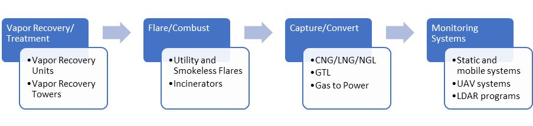

Saskatchewan Research Council (SRC): Centre for the Demonstration of Emissions Reductions (CeDER)
 The
Saskatchewan Research Council
(SRC) is one of Canada’s leading providers of applied research,
development and demonstration (RD&D) and technology commercialization. SRC's mission is to help the
people of Saskatchewan strengthen the economy with quality jobs and a secure environment.
The
Saskatchewan Research Council
(SRC) is one of Canada’s leading providers of applied research,
development and demonstration (RD&D) and technology commercialization. SRC's mission is to help the
people of Saskatchewan strengthen the economy with quality jobs and a secure environment.
Technology developers who offer emissions reduction technologies to help industry comply with regulations can struggle to move through the research and development phase into commercialization. To help accelerate the adoption of practical and economic technologies, SRC created the Centre for the Demonstration of Emissions Reductions (CeDER). CeDER provides real-world testing, demonstration and validation of emissions measurement, reduction, capture, and conversion technologies. It offers independent, industry-recognized, third-party certification to clients who may be technology providers, regulators, or operators from a variety of industries looking to implement new technologies. CeDER is also modular and mobile, and SRC takes it to sites where a wide range of tests are done for diverse technology scenarios at full or pre-commercial scale.
CeDER tests and validates the effectiveness of most types of emission reduction systems: 
As the number of emission reduction systems tested and validated by CeDER increases, methane emissions are expected to decrease. SRC has generated a database of methane mitigation technologies that can be used as a repository of methods and equipment, and as a screening tool for various methane mitigation challenges. These data help to commercialize emission reduction technologies. Eventually, proven technologies can be adopted by the industry for wide-scale use.